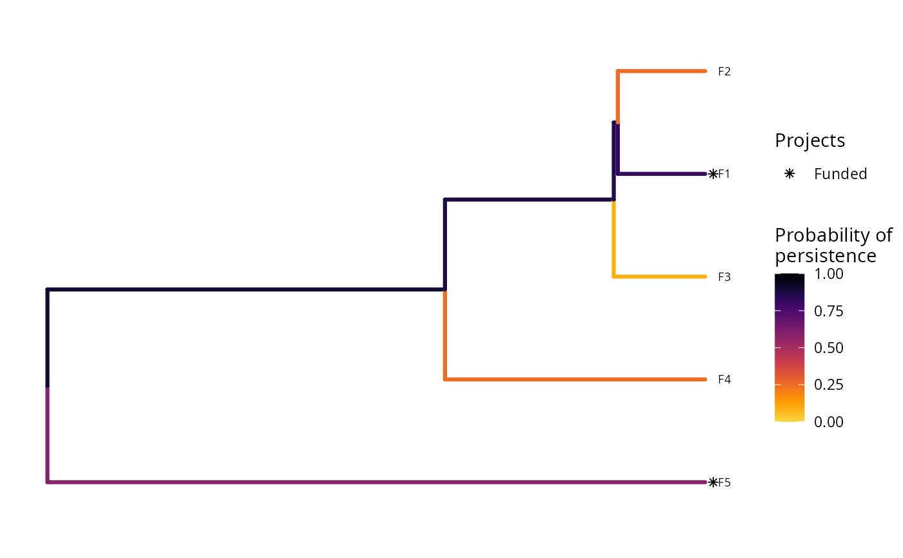

R/add_max_phylo_div_objective.R
add_max_phylo_div_objective.RdSet the objective of a project prioritization problem to
maximize the phylogenetic diversity that is expected to persist into the
future, whilst ensuring that the cost of the solution is within a
pre-specified budget (Bennett et al. 2014, Faith 2008).
add_max_phylo_div_objective(x, budget, tree)
| x |
|
|---|---|
| budget |
|
| tree |
|
ProjectProblem-class object with the objective
added to it.
A problem objective is used to specify the overall goal of the project prioritization problem. Here, the maximum phylogenetic diversity objective seeks to find the set of actions that maximizes the expected amount of evolutionary history that is expected to persist into the future given the evolutionary relationships between the features (e.g. populations, species). Let \(I\) represent the set of conservation actions (indexed by \(i\)). Let \(C_i\) denote the cost for funding action \(i\), and let \(m\) denote the maximum expenditure (i.e. the budget). Also, let \(F\) represent each feature (indexed by \(f\)), \(W_f\) represent the weight for each feature \(f\) (defaults to zero for each feature unless specified otherwise), and \(E_f\) denote the probability that each feature will go extinct given the funded conservation projects.
To describe the evolutionary relationships between the features \(f \in F\), consider a phylogenetic tree that contains features \(f \in F\) with branches of known lengths. This tree can be described using mathematical notation by letting \(B\) represent the branches (indexed by \(b\)) with lengths \(L_b\) and letting \(T_{bf}\) indicate which features \(f \in F\) are associated with which phylogenetic branches \(b \in B\) using zeros and ones. Ideally, the set of features \(F\) would contain all of the species in the study area---including non-threatened species---to fully account for the benefits for funding different actions.
To guide the prioritization, the conservation actions are organized into
conservation projects. Let \(J\) denote the set of conservation projects
(indexed by \(j\)), and let \(A_{ij}\) denote which actions
\(i \in I\) comprise each conservation project
\(j \in J\) using zeros and ones. Next, let \(P_j\) represent
the probability of project \(j\) being successful if it is funded. Also,
let \(B_{fj}\) denote the enhanced probability that each feature
\(f \in F\) associated with the project \(j \in J\)
will persist if all of the actions that comprise project \(j\) are funded
and that project is allocated to feature \(f\).
For convenience,
let \(Q_{fj}\) denote the actual probability that each
\(f \in F\) associated with the project \(j \in J\)
is expected to persist if the project is funded. If the argument
to adjust_for_baseline in the problem function was set to
TRUE, and this is the default behavior, then
\(Q_{fj} = (P_{j} \times B_{fj}) + \bigg(\big(1 - (P_{j} B_{fj})\big)
\times (P_{n} \times B_{fn})\bigg)\), where n corresponds to the
baseline "do nothing" project. This means that the probability
of a feature persisting if a project is allocated to a feature
depends on (i) the probability of the project succeeding, (ii) the
probability of the feature persisting if the project does not fail,
and (iii) the probability of the feature persisting even if the project
fails. Otherwise, if the argument is set to FALSE, then
\(Q_{fj} = P_{j} \times B_{fj}\).
The binary control variables \(X_i\) in this problem indicate whether each project \(i \in I\) is funded or not. The decision variables in this problem are the \(Y_{j}\), \(Z_{fj}\), \(E_f\), and \(R_b\) variables. Specifically, the binary \(Y_{j}\) variables indicate if project \(j\) is funded or not based on which actions are funded; the binary \(Z_{fj}\) variables indicate if project \(j\) is used to manage feature \(f\) or not; the semi-continuous \(E_f\) variables denote the probability that feature \(f\) will go extinct; and the semi-continuous \(R_b\) variables denote the probability that phylogenetic branch \(b\) will remain in the future.
Now that we have defined all the data and variables, we can formulate the problem. For convenience, let the symbol used to denote each set also represent its cardinality (e.g. if there are ten features, let \(F\) represent the set of ten features and also the number ten).
$$ \mathrm{Maximize} \space (\sum_{b = 0}^{B} L_b R_b) + \sum_{f}^{F} (1 - E_f) W_f \space \mathrm{(eqn \space 1a)} \\ \mathrm{Subject \space to} \space \sum_{i = 0}^{I} C_i \leq m \space \mathrm{(eqn \space 1b)} \\ R_b = 1 - \prod_{f = 0}^{F} ifelse(T_{bf} == 1, \space E_f, \space 1) \space \forall \space b \in B \space \mathrm{(eqn \space 1c)} \\ E_f = 1 - \sum_{j = 0}^{J} Z_{fj} Q_{fj} \space \forall \space f \in F \space \mathrm{(eqn \space 1d)} \\ Z_{fj} \leq Y_{j} \space \forall \space j \in J \space \mathrm{(eqn \space 1e)} \\ \sum_{j = 0}^{J} Z_{fj} \times \mathrm{ceil}(Q_{fj}) = 1 \space \forall \space f \in F \space \mathrm{(eqn \space 1f)} \\ A_{ij} Y_{j} \leq X_{i} \space \forall \space i \in I, j \in J \space \mathrm{(eqn \space 1g)} \\ E_{f}, R_{b} \geq 0, E_{f}, R_{b} \leq 1 \space \forall \space b \in B \space f \in F \space \mathrm{(eqn \space 1h)} \\ X_{i}, Y_{j}, Z_{fj} \in [0, 1] \space \forall \space i \in I, j \in J, f \in F \space \mathrm{(eqn \space 1i)} $$
The objective (eqn 1a) is to maximize the expected phylogenetic diversity (Faith 2008) plus the probability each feature will remain multiplied by their weights (noting that the feature weights default to zero). Constraint (eqn 1b) limits the maximum expenditure (i.e. ensures that the cost of the funded actions do not exceed the budget). Constraints (eqn 1c) calculate the probability that each branch (including tips that correspond to a single feature) will go extinct according to the probability that the features which share a given branch will go extinct. Constraints (eqn 1d) calculate the probability that each feature will go extinct according to their allocated project. Constraints (eqn 1e) ensure that feature can only be allocated to projects that have all of their actions funded. Constraints (eqn 1f) state that each feature can only be allocated to a single project. Constraints (eqn 1g) ensure that a project cannot be funded unless all of its actions are funded. Constraints (eqns 1h) ensure that the probability variables (\(E_f\)) are bounded between zero and one. Constraints (eqns 1i) ensure that the action funding (\(X_i\)), project funding (\(Y_j\)), and project allocation (\(Z_{fj}\)) variables are binary.
Although this formulation is a mixed integer quadratically constrained programming problem (due to eqn 1c), it can be approximated using linear terms and then solved using commercial mixed integer programming solvers. This can be achieved by substituting the product of the feature extinction probabilities (eqn 1c) with the sum of the log feature extinction probabilities and using piecewise linear approximations (described in Hillier & Price 2005 pp. 390--392) to approximate the exponent of this term.
Bennett JR, Elliott G, Mellish B, Joseph LN, Tulloch AI, Probert WJ, Di Fonzo MMI, Monks JM, Possingham HP & Maloney R (2014) Balancing phylogenetic diversity and species numbers in conservation prioritization, using a case study of threatened species in New Zealand. Biological Conservation, 174: 47--54.
Faith DP (2008) Threatened species and the potential loss of phylogenetic diversity: conservation scenarios based on estimated extinction probabilities and phylogenetic risk analysis. Conservation Biology, 22: 1461--1470.
Hillier FS & Price CC (2005) International series in operations research & management science. Springer.
# build problem with maximum phylogenetic diversity objective and $300 budget p1 <- problem(sim_projects, sim_actions, sim_features, "name", "success", "name", "cost", "name") %>% add_max_phylo_div_objective(budget = 300, tree = sim_tree) %>% add_binary_decisions() # solve problem s1 <- solve(p1)#> Optimize a model with 50 rows, 50 columns and 123 nonzeros #> Model has 3 piecewise-linear objective terms #> Variable types: 3 continuous, 42 integer (42 binary) #> Semi-Variable types: 5 continuous, 0 integer #> Coefficient statistics: #> Matrix range [9e-02, 1e+02] #> Objective range [2e-01, 2e+00] #> Bounds range [1e+00, 1e+00] #> RHS range [1e+00, 3e+02] #> Found heuristic solution: objective 1.7230503 #> Presolve removed 16 rows and 12 columns #> Presolve time: 0.01s #> Presolved: 37 rows, 29615 columns, 29656 nonzeros #> Variable types: 29580 continuous, 35 integer (35 binary) #> Presolve removed 3 rows and 3 columns #> Presolved: 34 rows, 29612 columns, 29650 nonzeros #> #> #> Starting sifting (using dual simplex for sub-problems)... #> #> Iter Pivots Primal Obj Dual Obj Time #> 0 0 infinity -3.2034487e+00 0s #> 1 12 1.9999968e+06 -3.0351728e+00 0s #> 2 16 9.9999745e+05 -3.0278829e+00 0s #> 3 19 8.8659259e+05 -3.0271402e+00 0s #> 4 22 7.8228764e+05 -3.0264313e+00 0s #> 5 25 6.8002789e+05 -3.0257131e+00 0s #> 6 28 5.7879074e+05 -3.0249813e+00 0s #> 7 31 4.7908748e+05 -3.0242426e+00 0s #> 8 34 3.8040682e+05 -3.0234967e+00 0s #> 9 37 2.8274876e+05 -3.0227473e+00 0s #> 10 40 1.8611329e+05 -3.0219985e+00 0s #> 11 43 9.0500428e+04 -3.0215420e+00 0s #> 12 48 8.2112198e+03 -3.0215226e+00 0s #> 13 52 -2.3045430e+00 -3.0213644e+00 0s #> 14 56 -2.3182094e+00 -3.0212064e+00 0s #> 15 60 -2.3318729e+00 -3.0210487e+00 0s #> 16 64 -2.3453096e+00 -3.0208939e+00 0s #> 17 68 -2.3587432e+00 -3.0207397e+00 0s #> 18 72 -2.3721739e+00 -3.0205860e+00 0s #> 19 76 -2.3856015e+00 -3.0204331e+00 0s #> 20 82 -2.3988023e+00 -3.0202835e+00 0s #> 21 86 -2.4120000e+00 -3.0201348e+00 0s #> 22 90 -2.4251944e+00 -3.0199872e+00 0s #> 23 94 -2.4395142e+00 -3.0198407e+00 0s #> 24 98 -2.4566156e+00 -3.0196979e+00 0s #> 25 102 -2.4739008e+00 -3.0195565e+00 0s #> 26 106 -2.4909582e+00 -3.0194190e+00 0s #> 27 110 -2.5080111e+00 -3.0192831e+00 0s #> 28 114 -2.5248363e+00 -3.0191513e+00 0s #> 29 119 -2.5416570e+00 -3.0190213e+00 0s #> 30 124 -2.5582501e+00 -3.0188954e+00 0s #> 31 129 -2.5748387e+00 -3.0187716e+00 0s #> 32 134 -2.5911996e+00 -3.0186521e+00 0s #> 33 139 -2.6073685e+00 -3.0185348e+00 0s #> 34 144 -2.6236851e+00 -3.0184220e+00 0s #> 35 149 -2.6396220e+00 -3.0183115e+00 0s #> 36 154 -2.6557419e+00 -3.0182036e+00 0s #> 37 159 -2.6718217e+00 -3.0181004e+00 0s #> 38 164 -2.6767356e+00 -3.0179482e+00 0s #> 39 170 -2.6831024e+00 -3.0177991e+00 0s #> 40 176 -2.6894664e+00 -3.0176505e+00 0s #> 41 182 -2.6958275e+00 -3.0175026e+00 0s #> 42 188 -2.7021857e+00 -3.0173553e+00 0s #> 43 194 -2.7085409e+00 -3.0172087e+00 0s #> 44 200 -2.7147063e+00 -3.0170672e+00 0s #> 45 206 -2.7208689e+00 -3.0169265e+00 0s #> 46 212 -2.7270285e+00 -3.0167866e+00 0s #> 47 218 -2.7331852e+00 -3.0166476e+00 0s #> 48 224 -2.7393388e+00 -3.0165096e+00 0s #> 49 230 -2.7454894e+00 -3.0163726e+00 0s #> #> Sifting complete #> #> #> Root relaxation: objective 2.904788e+00, 248 iterations, 0.23 seconds #> #> Nodes | Current Node | Objective Bounds | Work #> Expl Unexpl | Obj Depth IntInf | Incumbent BestBd Gap | It/Node Time #> #> * 0 0 0 2.9047880 2.90479 0.00% - 0s #> #> Explored 0 nodes (248 simplex iterations) in 0.43 seconds #> Thread count was 1 (of 4 available processors) #> #> Solution count 1: 2.90479 #> #> Optimal solution found (tolerance 0.00e+00) #> Best objective 2.904787950913e+00, best bound 2.904787950913e+00, gap 0.0000%#> # A tibble: 1 x 21 #> solution status obj cost F1_action F2_action F3_action F4_action F5_action #> <int> <chr> <dbl> <dbl> <dbl> <dbl> <dbl> <dbl> <dbl> #> 1 1 OPTIM~ 2.90 294. 1 0 0 1 1 #> # ... with 12 more variables: baseline_action <dbl>, F1_project <dbl>, #> # F2_project <dbl>, F3_project <dbl>, F4_project <dbl>, F5_project <dbl>, #> # baseline_project <dbl>, F1 <dbl>, F2 <dbl>, F3 <dbl>, F4 <dbl>, F5 <dbl># build another problem that includes feature weights p2 <- p1 %>% add_feature_weights("weight") # solve problem with feature weights s2 <- solve(p2)#> Optimize a model with 50 rows, 50 columns and 123 nonzeros #> Model has 3 piecewise-linear objective terms #> Variable types: 3 continuous, 42 integer (42 binary) #> Semi-Variable types: 5 continuous, 0 integer #> Coefficient statistics: #> Matrix range [9e-02, 1e+02] #> Objective range [4e-01, 3e+00] #> Bounds range [1e+00, 1e+00] #> RHS range [1e+00, 3e+02] #> Found heuristic solution: objective 2.3885148 #> Presolve removed 16 rows and 12 columns #> Presolve time: 0.01s #> Presolved: 37 rows, 29615 columns, 29656 nonzeros #> Variable types: 29580 continuous, 35 integer (35 binary) #> Presolve removed 3 rows and 3 columns #> Presolved: 34 rows, 29612 columns, 29650 nonzeros #> #> #> Starting sifting (using dual simplex for sub-problems)... #> #> Iter Pivots Primal Obj Dual Obj Time #> 0 0 infinity -5.0366315e+00 0s #> 1 12 1.9999950e+06 -4.7000796e+00 0s #> 2 16 9.9999627e+05 -4.6927897e+00 0s #> 3 19 8.8659144e+05 -4.6920470e+00 0s #> 4 22 7.8228652e+05 -4.6913381e+00 0s #> 5 25 6.8002680e+05 -4.6906199e+00 0s #> 6 28 5.7878967e+05 -4.6898881e+00 0s #> 7 31 4.7908644e+05 -4.6891494e+00 0s #> 8 34 3.8040581e+05 -4.6884035e+00 0s #> 9 37 2.8274778e+05 -4.6876541e+00 0s #> 10 40 1.8611234e+05 -4.6869053e+00 0s #> 11 43 9.0499500e+04 -4.6864488e+00 0s #> 12 48 8.2103062e+03 -4.6864294e+00 0s #> 13 52 -3.2451351e+00 -4.6862711e+00 0s #> 14 56 -3.2725991e+00 -4.6861129e+00 0s #> 15 60 -3.3000601e+00 -4.6859551e+00 0s #> 16 64 -3.3270681e+00 -4.6858002e+00 0s #> 17 68 -3.3540731e+00 -4.6856459e+00 0s #> 18 72 -3.3810751e+00 -4.6854922e+00 0s #> 19 76 -3.4080740e+00 -4.6853391e+00 0s #> 20 80 -3.4346199e+00 -4.6851895e+00 0s #> 21 84 -3.4611627e+00 -4.6850407e+00 0s #> 22 88 -3.4877024e+00 -4.6848931e+00 0s #> 23 92 -3.5169039e+00 -4.6847465e+00 0s #> 24 96 -3.5517437e+00 -4.6846038e+00 0s #> 25 100 -3.5865790e+00 -4.6844624e+00 0s #> 26 104 -3.6209604e+00 -4.6843249e+00 0s #> 27 108 -3.6553373e+00 -4.6841890e+00 0s #> 28 112 -3.6892603e+00 -4.6840572e+00 0s #> 29 117 -3.7231789e+00 -4.6839272e+00 0s #> 30 122 -3.7566435e+00 -4.6838014e+00 0s #> 31 127 -3.7901037e+00 -4.6836777e+00 0s #> 32 133 -3.8231101e+00 -4.6835582e+00 0s #> 33 138 -3.8561120e+00 -4.6834410e+00 0s #> 34 143 -3.8886602e+00 -4.6833283e+00 0s #> 35 148 -3.9212039e+00 -4.6832180e+00 0s #> 36 153 -3.9537429e+00 -4.6831103e+00 0s #> 37 158 -3.9862084e+00 -4.6830072e+00 0s #> 38 163 -3.9961684e+00 -4.6828564e+00 0s #> 39 169 -4.0090856e+00 -4.6827083e+00 0s #> 40 175 -4.0220000e+00 -4.6825607e+00 0s #> 41 181 -4.0349115e+00 -4.6824138e+00 0s #> 42 187 -4.0478201e+00 -4.6822676e+00 0s #> 43 193 -4.0607257e+00 -4.6821221e+00 0s #> 44 199 -4.0732489e+00 -4.6819816e+00 0s #> 45 205 -4.0857692e+00 -4.6818420e+00 0s #> 46 211 -4.0982865e+00 -4.6817032e+00 0s #> 47 217 -4.1108009e+00 -4.6815654e+00 0s #> 48 223 -4.1233123e+00 -4.6814285e+00 0s #> 49 229 -4.1358206e+00 -4.6812926e+00 0s #> #> Sifting complete #> #> #> Root relaxation: objective 4.523860e+00, 240 iterations, 0.26 seconds #> #> Nodes | Current Node | Objective Bounds | Work #> Expl Unexpl | Obj Depth IntInf | Incumbent BestBd Gap | It/Node Time #> #> * 0 0 0 4.5238601 4.52386 0.00% - 0s #> #> Explored 0 nodes (240 simplex iterations) in 0.47 seconds #> Thread count was 1 (of 4 available processors) #> #> Solution count 1: 4.52386 #> #> Optimal solution found (tolerance 0.00e+00) #> Best objective 4.523860124691e+00, best bound 4.523860124691e+00, gap 0.0000%#> # A tibble: 1 x 21 #> solution status obj cost F1_action F2_action F3_action F4_action F5_action #> <int> <chr> <dbl> <dbl> <dbl> <dbl> <dbl> <dbl> <dbl> #> 1 1 OPTIM~ 4.52 294. 1 0 0 1 1 #> # ... with 12 more variables: baseline_action <dbl>, F1_project <dbl>, #> # F2_project <dbl>, F3_project <dbl>, F4_project <dbl>, F5_project <dbl>, #> # baseline_project <dbl>, F1 <dbl>, F2 <dbl>, F3 <dbl>, F4 <dbl>, F5 <dbl>